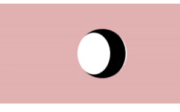
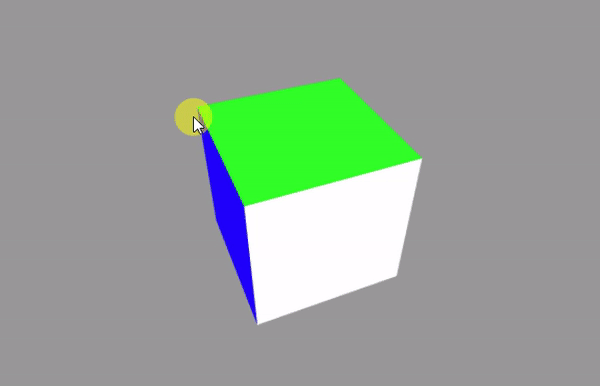
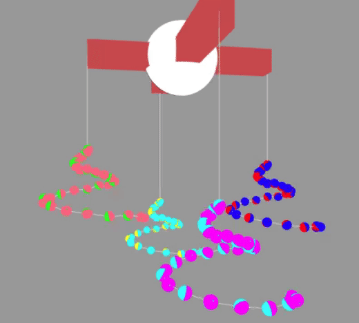
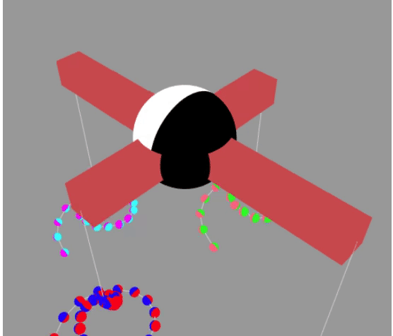
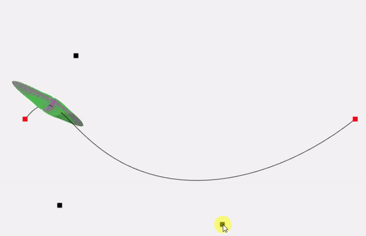

Johann Felipe González Ávila
Computación Visual Interactiva.
¿Qué es esto?
Hola!!!Este blog lo creo para poder compartir los trabajos realizados en la materia Computación Visual Interactiva de la Universidad de los Andes.
Es un pequeño recorrido sobre lo que es la visualización 2D y 3D en webGl
Proyectos
En esta sección puede encontrar los proyetos realizados
Trabajo 1. Comparación de tecnologías.
En esta entrada solo visualizaremos las diferencias entre dos tipos de tecnolog[ias para la visualziación de elementos en 3D sobre un browser. En este caso WebGl y Processing. Proyecto 1
Trabajo 2. Figura básica.
Con las primitivas de WebGl creamos una esfera. Proyecto 2
Trabajo 3. Interacción.
Realizar un ejemplo que tenga algún tipo de interacción con eventos mouse. Proyecto 3
Trabajo 4. Primitivas con posiciones relativas.
Realizar un ejemplo que tenga primitivas y movimientos relativos. Proyecto 4
Trabajo 5. Trabajo con cámaras.
Juego de cámaras. Proyecto 5
Trabajo 6. Figura asimétrica
Realizar el cargue de una figura asimétrica. Proyecto 6
Trabajo 7. Texturas

Realizar el cargue de una escena con texturas. Proyecto 7
Trabajo 8. Luces

Realizar el cargue de una escena con texturas y luces. Proyecto 8
Trabajo 9. Sombras
Realizar el cargue de una escena con texturas y luces. Proyecto 8
Trabajo 10. Ray Tracing
Realizar el cargue de una escena con texturas y luces. Proyecto 8
Proyecto Final. Lighting design software for WebGl

Permitir realizar el modelado de escenarios con luces de manera realistica similar al software dial pero enfocado en WebGl y Ray tracing o alguna técnica similar Proyecto Final
Profundización. Procesamiento de imágenes
Un pequeño resumen de temas relacionados al procesamiento de imágenes con enfásis en imágenes médicas Profundizacion
Ejemplo explicativo.
Buscar un Ejemplo y explicarlo a clase ejemplo